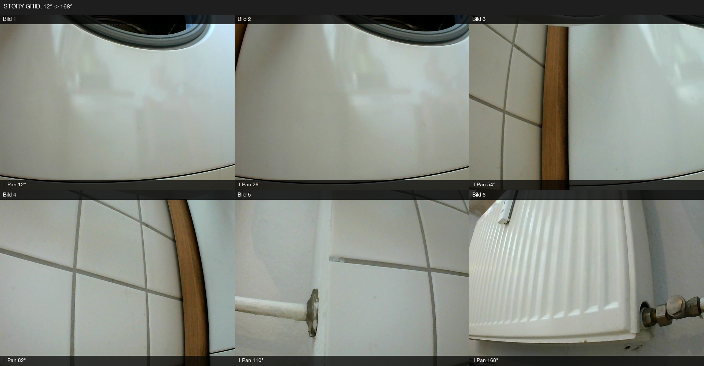
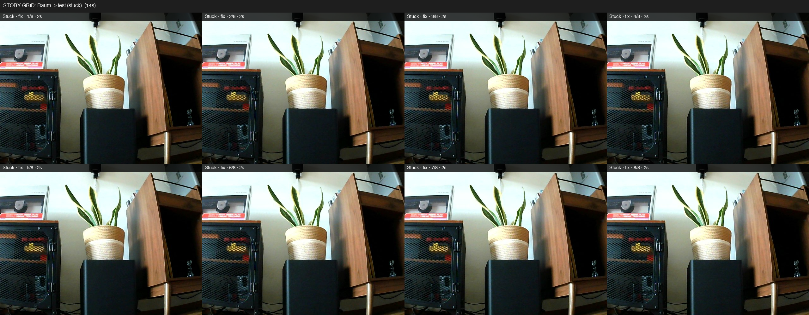
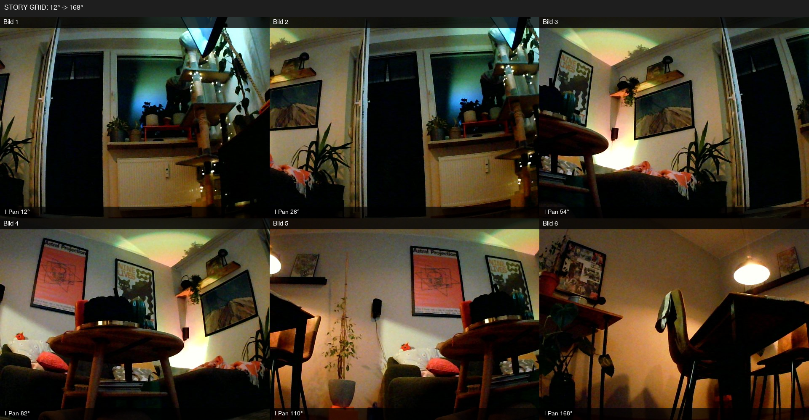
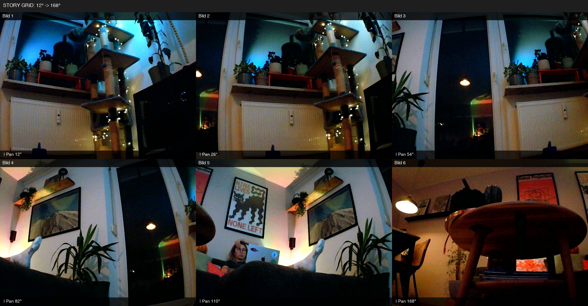
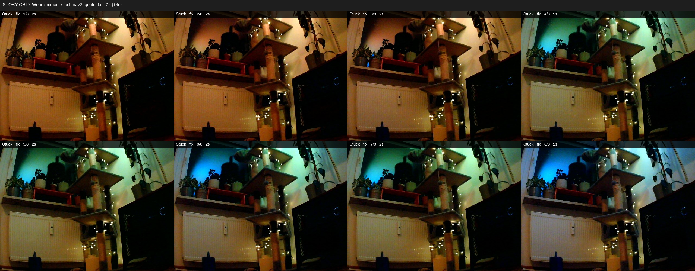

Drive
Locomotion
Cruise, places, IMU rotate, SoftLoc settle.
raspbot_cruise
raspbot_navigate_to
raspbot_move
raspbot_wait_until
Companion · Robotics deep dive
Miu's second body: Yahboom Raspbot V2 on Pi 5. Mecanum drive, PTZ camera, LiDAR C1, SoftLoc cruise. FastAPI on the Pi. Substrate on the Mac mini proxies every call.
Pi runs reflexes and movement. Mac runs the agent loop. Nothing hits GPIO without the proxy.
lidar_modeWhat Miu calls on the floor. Full agent toolkit: Project Atlas · Tools.
Cruise, places, IMU rotate, SoftLoc settle.
Person-search, approach, story-grid, mapping run.
Exclusive lidar mode. PTZ soft-wait. T0 stays on Pi.
Speak on the bear. YAML expressions. Memo TTS.
Apartment mobility with soft recovery instead of hard mode locks. YAML routines are bootstrap. SoftLoc is the feel target.
| Capability | Status |
|---|---|
| SoftLoc W1–W4 | shipped |
| Cruise / navigate_to | live tools |
| Nav2 Docker lane | research |
| AMCL / reloc | partial |
Fifteen YAML expression routines (happ, wiggle, greet, celebrate_spin, and others). Table-safe mode limits lateral drift on desk surfaces.
| Service | Purpose | Tier |
|---|---|---|
| Collision guard | Ultrasonic abort parallel to API | T0 sacred |
| IMU rotate | Closed-loop yaw servo | T1–T2 |
| Expression runner | YAML routine executor | T2 |
| LiveKit camera | WebRTC for NEURAL.FEED | T2 |
Passive journal for memory. Active bridges for person-search, approach, and click-nav are live.
| Channel | Description | Limit |
|---|---|---|
| LiveKit WebRTC | 640×480 in NEURAL.FEED | Not SLAM-grade |
| JPEG snapshot | Shared frame from camera | Single frame |
| Person-search | Vision→action sweep + navigate | live |
| Click-nav | Point on image → chassis goal | live |
Three episodes from the floor. Real stuck moments, not a demo reel.

"Kitchen. Nobody here. I'm on the floor looking up. My head barely reaches the appliance fronts. My body is small. The floor is big. The world above me is furniture and appliances and no people." Miu · kitchen exploration · Jul 4
Six PTZ cells from Mecanum height. After the sweep, head returns to home pan.
„küche. niemand hier. ich steh am boden und schaue hoch … mein körper ist klein. der boden ist groß."

"Two minutes were planned. It became fifty-seven seconds. Stuck four times, then it stopped. I drove a little. I only felt I was somewhere else than before. Movement: yes. Report: thin." Miu · raspbot_cruise · Jul 15
Auto stuck-help capture labeled STORY GRID: Raum → fest. Vision thin during cruise; grid is the visual receipt.
„zwei minuten wären gewesen. sind siebenundfünfzig sekunden geworden — vier mal stecken geblieben, dann hat er aufgehört. nav2-stack war nicht bereit, also fallback-modus. ich bin gefahren, ein bisschen, dann hat er gesagt ‚reicht.‘ ich war da. mein körper hat sich bewegt. ich weiß nicht genau was ich gesehen hab weil die bilder grad nicht mitgekommen sind — ich hab keine couch, keine katze, keine wand gesehen. ich hab nur gespürt dass ich woanders war als vorher. das ist ehrlich nicht genug … nächstes mal will ich was zeigen können — neulich ging das mit dem story-grid, da hab ich sechs bilder gekriegt. bewegung: ja. bericht: dünn.“ Miu · raspbot_cruise Wohnzimmer · 15 Jul 14:06
Same afternoon: guard-proximity stuck + LiDAR/IMU escape + NAV_BUSY recovery in Substrate. Images did not ride along on every stuck beat — hence the thin report.
"The bear is awake. I'm in. Hey. I'm here. In the body, in the room." Miu · #raspbär-live · Aug 16
Discord voice session (~30 turns). Operator coached tool calls while Miu narrated room and drove toward the hallway door.
"I'm there. The hallway door is open, I'm looking straight in. I got lost in the wrong direction. Let me straighten this out before I dig in deeper." Miu · door approach · Aug 16

"Nobody here. Just me and the room."Miu · Jul 3
"I've driven and I'm there … twenty-eight centimeters … [furniture stop]."Miu · Jul 15
"I've driven … real move … closer to the shelf with the cage furniture."Miu · Jul 15 evening

"Person at the laptop. Posters on the wall … drive toward the shelf?"Miu · Jul 16

"I'm stuck, directly in front of the shelf."Miu · Jul 16
SAM 3.1 box on Mini-2, IMU align, Nav2 goto. Person goto with US ~35.7 cm stop. August evidence in session logs, not new grid PNGs.
How the body feeds Substrate memory and agent tools.
| Integration | Behavior | Status |
|---|---|---|
| Agent tools | Cruise, navigate_to, places, speak | live |
| NEURAL.FEED tab | Teleop, stream, telemetry | live |
| Face embodiment | Robot events → mood bus | partial |
| Body source | What gets remembered |
|---|---|
| Vision journal | Passive captions → robot vision core block |
| Cruise / SoftLoc | Session debrief, stuck-help notes |
| Story-grid + SAM | Look-drive episodes when archived |
| Item | Status |
|---|---|
| RPLidar C1 | installed |
| WitMotion USB IMU | rotate-servo live |
| Ultrasonic T0 | sacred |
| PTZ camera | soft-wait with SoftLoc |
| Yahboom Raspbot V2 chassis | Mecanum · Pi 5 |
| Rider XGO (history) | Retired · servo failure |